Reduction for ORNL SANS
This document explains how to use Mantid to perform reduction of ORNL SANS data.
Information about the underlying Mantid algorithms involved can be found in the
SANSReduction algorithm documentation.
For HFIR reduction specifically, you can also see the HFIRSANSReduction algorithm documentation.
Contents
Reduction script
import mantid
from mantid.simpleapi import *
from reduction_workflow.instruments.sans.hfir_command_interface import *
GPSANS()
SetSampleDetectorDistance(1802.5)
SetWavelength(4.86, 0.13)
NoSolidAngle()
NoNormalization()
SetAbsoluteScale(1)
AzimuthalAverage(n_bins=100, n_subpix=1, log_binning=False)
IQxQy(nbins=100)
SetWedges(number_of_wedges=2, wedge_angle=5, wedge_offset=0)
SetBeamCenter(95.5, 127.5)
NoSensitivityCorrection()
SetTransmission(1, 0)
ThetaDependentTransmission(False)
TransmissionDarkCurrent("HiResSANS_exp5_scan0032_0001.xml")
DataPath("/SNS/users/m2d")
AppendDataFile(["/SNS/users/m2d/scan30test1.xml"])
SaveIq()
Reduce()
The hfir_command_interface import statement gives us access the the various commands we will use to set up the reduction process.
The first important part of the script is to declare which instrument you are using.
This will define the general flow of the reduction process. In this particular case, this is done by calling GPSANS().
The DataPath() command sets the directory where the data file will be found.
Once this has been done, only the name of the data files need to be supplied to the various reduction commands.
The rest of the commands are setting up options for the reduction. Those commands do not need to be typed in any particular order. They only set options and define the reduction process that will be used later when processing each data file. See the list of commands for more details.
The AppendDataFile() command appends a data file to the list of files to be reduced. The reducer can process any number of data files, and the same reduction process will be applied to each of them.
The Reduce() command tell the reducer to start the reduction process. Since this command does the actual execution, it needs to be the last command in the reduction script.
Reduction commands
The following is a list of reduction commands to apply corrections to the data and produce  .
.
Instrument Selection
Since each instrument has its own configuration parameters, the first command called is the name of the instrument.
- GPSANS()
- Sets up the GPSANS reduction options.
- BIOSANS()
- Sets up the BIOSANS reduction options.
- EQSANS()
- Sets up the EQSANS reduction options.
Beam Center
Options for finding the beam center
- SetBeamCenter(x,y)
- Sets the beam center location to be used, in pixel coordinates.
- DirectBeamCenter(datafile)
Finds the beam center using the direct beam method. The position of the beam center p is given by
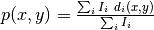
where i runs over all pixels within the largest square detector area centered on the initial guess for the beam center position. The initial guess is the center of the detector.  is the detector count for pixel i, and
is the detector count for pixel i, and  is the pixel coordinates. The calculation above is repeated iteratively by replacing the initial guess with the position found with the previous iteration. The process stops when the difference between the positions found with two consecutive iterations is smaller than 0.25 pixel.
is the pixel coordinates. The calculation above is repeated iteratively by replacing the initial guess with the position found with the previous iteration. The process stops when the difference between the positions found with two consecutive iterations is smaller than 0.25 pixel.
- ScatteringBeamCenter(datafile, beam_radius=3.0)
- Finds the beam center using the scattered beam method. The process is identical to the direct beam method, with the only difference being that the pixels within a distance R (the beam_radius parameter) of the beam center guess are excluded from the calculation. The direct beam is thus excluded and only the scattered data is used.
- TotalChargeNormalization(normalize_to_beam=True, beam_file='')
- [EQSANS only] Specifies that we want to normalize by the total proton charge, using the specified beam_file for the beam profile.
- BeamMonitorNormalization(reference_flux_file)
- [EQSANS only] Specifies that we want to normalize by the beam monitor, using the specified reference flux file.
Normalization options
- TimeNormalization()
- Tells the reducer to normalize the data to counting time.
- MonitorNormalization()
- Tells the reducer to normalize the data to the beam monitor.
- NoNormalization()
- Tells the reducer not to normalize the data.
Absolute Normalization
- SetAbsoluteScale(factor=1.0)
- Sets a multiplicative scale factor to obtain I(Q) in absolute scale.
- SetDirectBeamAbsoluteScale(direct_beam, beamstop_radius=None, attenuator_trans=1.0, sample_thickness=None, apply_sensitivity=False)
Tells the reducer to use the direct beam method to compute the absolute scale factor. The direct_beam parameter is a valid file path to the direct beam data file. attenuator_trans is the attenuator transmission. The sample_thickness should be given in cm. If apply_sensitivity=True, the sensitivity correction will be applied to the direct beam data before the absolute scale factor is computed.
The absolute cross-section in 1/cm is computed after all corrections including the transmission correction have been applied to the sample data. It is given by:
where D is the sample thickness in cm and K is given by
where N is the total empty beam detector counts per monitor count divided by the attenuation factor at the used wavelength, and 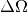 is the square of the ratio of the pixel size to the sample-detector distance.
Dark current subtraction
- NoDarkCurrent()
- Lets the reducer know that no dark current should be subtracted.
- DarkCurrent(datafile)
Specifies which data file to use for the dark current. The dark current is subtracted pixel by pixel by normalizing the dark current data by counting time, as follows:
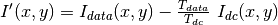
where the T-values are the counting times for the data set and the dark current (dc).
Pixel masking
- Mask(nx_low=0, nx_high=0, ny_low=0, ny_high=0, component_name=None)
- A band of pixels on each side of the detector is masked according to the input parameters.
By default this is done only for the main detector (See IDF tag ‘detector-name’). For Biosans one can specify ‘component_name=”wing_detector”’.
- MaskRectangle(x_min, x_max, y_min, y_max)
- Masks a rectangular region on the detector defined by the given pixel numbers.
- MaskDetectors(det_list)
- Masks the given detector IDs.
- MaskDetectorSide(side_to_mask=None)
- Masks a detector plane. Choices are ‘Front’, ‘Back’, and ‘None’.
- MaskComponent(component_name)
- Masks the given component_name. See the instrument IDF for the correct component name. Useful for BIOSANS to mask the ‘wing_detector’.
Sensitivity correction
- SensitivityCorrection(flood_data, min_sensitivity=0.5, max_sensitivity=1.5, dark_current=None, use_sample_dc=False)
The relative detector efficiency is computed the following way
where  is the pixel count of the flood data in pixel (x,y). If a minimum and/or maximum sensitivity is given, the pixels having an efficiency outside the given limits are masked and the efficiency is recomputed without using those pixels.
The sample data is then corrected by dividing the intensity in each pixels by the efficiency S
is the pixel count of the flood data in pixel (x,y). If a minimum and/or maximum sensitivity is given, the pixels having an efficiency outside the given limits are masked and the efficiency is recomputed without using those pixels.
The sample data is then corrected by dividing the intensity in each pixels by the efficiency S
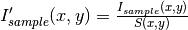
The pixels found to have an efficiency outside the given limits are also masked in the sample data so that they don’t enter any subsequent calculations.
If use_sample_dc is set to True, the dark current data that was chosen to be subtracted from the sample data will also be subtracted from the flood data. The subtraction is done before the sensitivity is calculated. Alternatively, a different file can be selected by specifying the dark_current parameter.
If the user chose to use the solid angle correction for the reduction process, that correction will be applied to the flood data before the sensitivity is calculated.
Note: The solid angle correction is either not applied at all, or applied to both the flood data to calculate the sensitivity correction and applied to the sample data as part of the reduction process.
- NoSensitivityCorrection()
- Tells the reducer not to correct for detector sensitivity.
- SetSensitivityBeamCenter(x,y)
- Sets the beam center for the flood data (may be different from the sample data).
- SensitivityDirectBeamCenter(datafile)
- Tells the reducer to use the direct beam center finding method for the flood data (see DirectBeamCenter for details).
- SensitivityScatteringBeamCenter(datafile, beam_radius=3.0)
- Tells the reducer to use the scattering beam center finding method for the flood data (see ScatteringBeamCenter for details).
Solid angle correction
- SolidAngle(detector_tubes=False, detector_wing=False)
Tells the reducer to apply the solid angle correction. The solid angle correction is applied as follows:

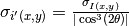
If detector_tubes is selected, the correction is calculated according to a tube geometry. The cosine term above then becomes:
where  : is the angle between the sample-to-pixel vector and its projection on the X-Z plane.
: is the angle between the sample-to-pixel vector and its projection on the X-Z plane.
detector_wing=True is used only for BioSANS wing detector.
- NoSolidAngle()
- Tells the reducer not to apply the solid angle correction.
Transmission correction
- SetTransmission(trans, error)
- [HFIR only] Sets the sample transmission. For each detector pixel, the transmission correction is applied as follows:
![I'(x,y) = \frac{I(x,y)}{T^{[1+\sec(2\theta)]/2}}
\sigma_{I'(x,y)} = \left[ \left[ \frac{\sigma_I}{T^{[1+\sec(2\theta)]/2}} \right]^2 + \left[ \frac{I(x,y)\sigma_T\left( \frac{1+\sec(2\theta)}{2}\right)}{T^{[\sec(2\theta)-1]/2}} \right]^2 \right]^{1/2}](../_images/math/759ed5057f39d3478a594068f6def3eaab1fd557.png)
- DirectBeamTransmissionsample_file, empty_file, beam_radius=3.0, theta_dependent=True, use_sample_dc=True)
Tells the reducer to use the direct beam method to calculate the sample transmission. The transmission is calculated as follows:
where  and 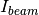 are the pixel counts for the sample data set and the direct beam data set, respectively. The sums for each data set runs only over the pixels within a distance R=beam_radium of the beam center.
and 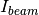 are the pixel counts for the sample data set and the direct beam data set, respectively. The sums for each data set runs only over the pixels within a distance R=beam_radium of the beam center.  and are the counting times for each of the two data sets. If the user chose to normalize the data using the beam monitor when setting up the reduction process, the beam monitor will be used to normalize the sample and direct beam data sets instead of the timer.
and are the counting times for each of the two data sets. If the user chose to normalize the data using the beam monitor when setting up the reduction process, the beam monitor will be used to normalize the sample and direct beam data sets instead of the timer.
If use_sample_dc is set to True, the dark current data that was chosen to be subtracted from the sample data will also be subtracted from the flood data.
Once the transmission is calculated, it is applied to the input data set in the same way as described for SetTransmission().
- BeamSpreaderTransmission(sample_spreader, direct_spreader, sample_scattering, direct_scattering, spreader_transmission=1.0, spreader_transmission_err=0.0, theta_dependent=True)
Tells the reducer to use the beam spreader (“glassy carbon”) method to calculate the sample transmission. The transmission is calculated as follows:
where 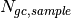 and 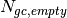 are the sums of all pixel counts for the sample and direct beam data sets with glass carbon, and  and
and  are the sums of all the pixel counts for the sample and direct beam without glassy carbon. The T values are the corresponding counting times. If the user chose to normalize the data using the beam monitor when setting up the reduction process, the beam monitor will be used to normalize all data sets instead of the timer.
are the sums of all the pixel counts for the sample and direct beam without glassy carbon. The T values are the corresponding counting times. If the user chose to normalize the data using the beam monitor when setting up the reduction process, the beam monitor will be used to normalize all data sets instead of the timer.
If the user chose to use a dark current data set when starting the reduction process, that dark current data will be subtracted from all data sets before the transmission is calculated.
Once the transmission is calculated, it is applied to the input data set in the same way as described for SetTransmission().
- NoTransmission()
- Tells the reducer not to apply a transmission correction.
- TransmissionDarkCurrent(dark_current)
- Sets the dark current to be subtracted for the transmission measurement.
- ThetaDependentTransmission(theta_dependence=True)
- If set to False, the transmission correction will be applied by dividing each pixel by the zero-angle transmission, without theta dependence.
- SetTransmissionBeamCenter(x, y)
- Sets the beam center position to be used when applying the transmission correction. The beam center position of the sample data is otherwise used.
- TransmissionDirectBeamCenter(datafile)
- Specifies a direct beam data file to use to determine a beam center to use when applying the transmission correction. The beam center position of the sample data is otherwise used.
Background subtraction
- Background(datafile)
- The same reduction steps that are applied to the sample data are applied to the background data set. Those are the dark current subtraction, the data normalization, applying the detector mask, the sensitivity correction, the solid angle correction and the transmission correction. Although the same sensitivity correction is used for both sample and background, the background transmission is calculated separately from the sample transmission. Once all those reduction steps are applied to the background data set, the resulting background is subtracted from the sample data.
- NoBackground()
- Tells the reducer not to subtract background.
- NoBckTransmission()
- Specifies that we do not want a transmission correction for the background.
- SetBckTransmission(trans, error, theta_dependent=True)
- Sets the background transmission.
- BckDirectBeamTransmission(sample_file, empty_file, beam_radius=3.0, theta_dependent=True)
- Similar to DirectBeamTransmission, this command sets the options to measure the background transmission.
- BckBeamSpreaderTransmission(sample_spreader, direct_spreader, sample_scattering, direct_scattering, spreader_transmission=1.0, spreader_transmission_err=0.0, theta_dependent=True)
- Similar to BeamSpreaderTransmission, this command sets the options to measure the background transmission.
- BckTransmissionDarkCurrent(dark_current)
- Similar to TransmissionDarkCurrent, this command sets the dark current for the background.
- BckThetaDependentTransmission(theta_dependence=True)
- Similar to ThetaDependentTransmission, this command sets the theta-dependence option of the transmission correction for the background.
- SetBckTransmissionBeamCenter(x, y)
- Similar to SetTransmissionBeamCenter, sets the beam center position to be used when applying the transmission correction. The beam center position of the background data is otherwise used.
- BckTransmissionDirectBeamCenter(datafile)
- Similar to TransmissionDirectBeamCenter, specifies a direct beam data file to use to determine a beam center to use when applying the transmission correction. The beam center position of the background data is otherwise used.
I(Q) calculation
- AzimuthalAverage(binning=None, suffix="_Iq", error_weighting=False, n_bins=100, n_subpix=1, log_binning=False, align_log_with_decades=False)
Sets the options for azimuthal averaging. The binning parameter sets the binning of the output I(q) distribution in the following format: 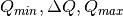 (the binning will be found automatically if the binning parameter is not supplied). When letting the binning be calculated automatically, setting log_binning=True will tell the reducer to find the best log binning. Setting align_log_with_decades=True will ensure that q points fall on decades. The suffix parameter sets the suffix appended to the I(q) workspace name. If error_weighting is set to True, the pixel counts will be weighted by a function of the error when computing I(q) (see below).
The binning of the output I(Q) distribution is defined by the user.
It runs from 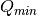 to  in steps of
in steps of  .
Each pixel is divided in 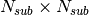 sub-pixels. Each sub-pixel is assigned a count equal to of the original pixel count.
.
Each pixel is divided in 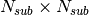 sub-pixels. Each sub-pixel is assigned a count equal to of the original pixel count.
The intensity I(Q) in each Q bin is given by
where the sum runs over all sub-pixels i such that  , where
, where  is the q-value of the given sub-pixel:
is the q-value of the given sub-pixel:
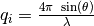
The w factor is a weight that is set to 1 by default. Alternatively, pixels can be weighted as a function of their error by setting  .
.
The resolution in Q is computed using Mildner-Carpenter.
- IQxQy(nbins=100, log_binning=False)
- Option to produce the reduced I(Qx, Qy). If log_binning is True the output QxQy will be logarithmic of base 10. By default the output QxQy is linear.
- NoIQxQy()
- Turns off the option to produce the reduced I(Qx, Qy).
- SaveIq(output_dir)
- Tells the reducer to save the output I(q) to an ascii file. The file will have a name similar to the input file, with “_Iq” appended to it. The file will be located in the specified directory.
- NoSaveIq()
- Do not save the I(q) result.
Wedge calculation
Wedge calculation is done as part of the azimuthal averaging algorithm. The image below shows how the wedges are defined. A wedge includes both the forward and backward direction relative to the beam center. Any number of wedges can be used. They will be uniformly distributed around 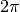. Each wedge is computed independently, so overlapping wedges are possible. As shown on the figure below, the angular offset is definited with respect to the x-axis.
- SetWedges(number_of_wedges=2, wedge_angle=30.0, wedge_offset=0.0)
Specifies I(q) wedges to compute.
- number_of_wedges: number of wedges to calculate
- wedge_angle: opening angle of each wedge, in degrees
- wedge_offset: angular offset relative to the x-axis, defining the first wedge.
Data Stitching
Data stitching can be done using the SANS reduction UI, or by calling the underlying command directly. The stitching process lets you pick an overlap region that will be used to scale data sets to each other. For any number of input data sets, the data sets are scaled to the first set in the input series. The second set is scaled to the first set, then the third set is scaled to the modified second set. The process continues in pairs until all the data sets are rescaled.
In the process of scaling two data sets, all the points of the lower Q set with a Q value lower than the higher bound of the overlap region are kept. All the points of the higher Q set with a Q value higher than the lower bound of the overlap region are kept (see image). All data points in the overlap region are kept.
- Stitch(data_list=[], q_min=None, q_max=None, output_workspace=None, scale=None, save_output=False)
Stitches a set of SANS data sets
- data_list: List of workspaces to stitch.
- q_min: Minimum Q-value of the overlap between two consecutive data sets. The q_min argument must be an array when stitching more than two data sets. The length of the array should be 1 less than the number of data sets.
- q_max: Maximum Q-value of the overlap between two consecutive data sets (must be an array for more than two data sets). The q_max argument must be an array when stitching more than two data sets. The length of the array should be 1 less than the number of data sets.
- output_workspace: Name of the output workspace containing the stitched data.
- scale: Scaling factor. The scaling factor should either be a single number or a list of length equal to the number of data sets. The former will scale everything by the given factor, while the latter will assign the given scaling factors to the data sets.
- save_output: If true, the output will be saved in the current working directory.
General commands
- DataPath(path)
- Sets the directory containing all data files.
- Reduce()
- Tells the reducer to execute the reduction process.
- AppendDataFile(datafile, workspace=None)
- Appends a data file to the list of files to be reduced.
- SetSampleDetectorOffset(distance)
- Sets an additive sample-detector distance offset, in mm.
- SetSampleDetectorDistance(distance)
- Sets the sample-detector distance, in mm. If set, this distance will take priority over the distance found in the data file.
- SetWavelength(wavelength, spread)
- Sets the wavelength, in Angstrom. If set, this wavelength will take priority over the wavelength found in the data file.
- ResetWavelength()
- Resets the wavelength to the value found in the data file.
- DivideByThickness(thickness=1.0)
- Specifies a thickness to normalize the output I(q) by, in cm.
- PerformFlightPathCorrection(do_correction=True)
- Specifies that we want to perform the flight path correction.
- SetTOFTailsCutoff(low_cut=0.0, high_cut=0.0)
- Specifies the TOF width to cut on each side of the TOF distribution.
- UseConfigTOFTailsCutoff(use_config=True)
- Use the TOF cut specified in the instrument configuration on /SNS/EQSANS.
- SkipTOFCorrection(skip=True)
- Skips the TOF correction. This is likely to give you bad results unless you know what you are doing.
- UseConfigMask(use_config=True)
- Use the mask configuration defined in the instrument configuration on /SNS/EQSANS.
- SetWavelengthStep(step=0.1)
- Sets the wavelength step size used when binning the TOF data after converting to wavelength. The I(q) is computed independently for each wavelength bin and combined afterwards.
- UseConfig(use_config=True)
- Use the instrument configuration on /SNS/EQSANS.
- CombineTransmissionFits(combine_frames=True)
- If True and we are running in frame-skipping mode, both frames will be processed together when measuring the transmission.
- BckCombineTransmissionFits(combine_frames=True)
- Similar to CombineTransmissionFits, but for the background.
- Resolution(sample_aperture_diameter=10.0)
- Specifies that we want to q-resolution to be computed.
- LoadNexusInstrumentXML(True)
- By default if the instrument definition is present in the NeXus file it is read. However one can pass LoadNexusInstrumentXML(False) to make sure the local IDF is read.
Category: Concepts